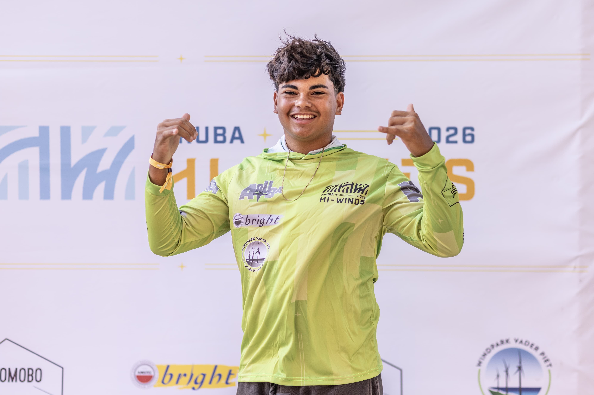
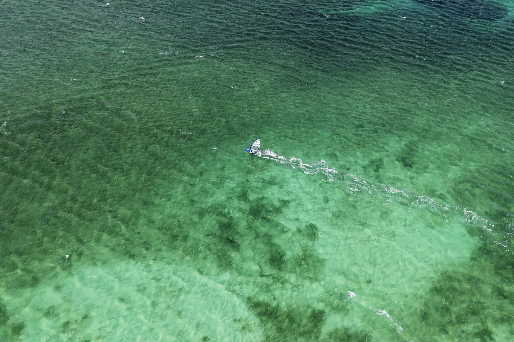

ARXON
.
Home
About
Races
Sponsorship
News
Contact
Become a Partner
→
Home
About
Races
Sponsorship
News
Contact
From the water
News &
updates

July 2026
U17 champion at Aruba Hi-Winds

August 2025
Three world cup wins in a single season
June 2025
Training season on Lac Bay
Follow the journey
Race updates, training clips and life on tour.
Follow on Instagram
→